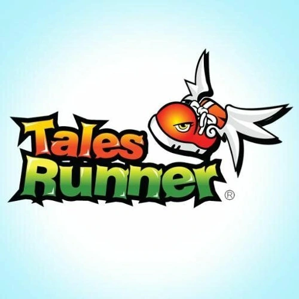
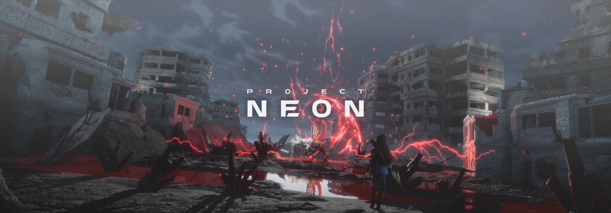
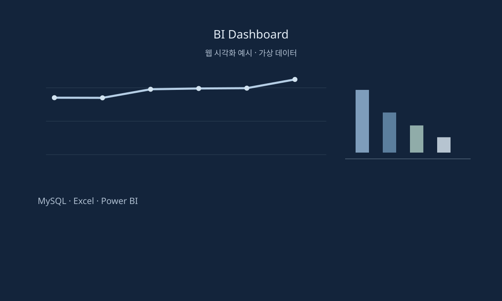

Projects
프로젝트
참여 이력과 프로젝트별 주요 사례.
Selected Projects
주요 프로젝트
개발, 라이브 운영, 서비스 기획.
프로젝트별 담당 업무와 사례를 확인할 수 있습니다.

TALES RUNNER
Business / Service PM
라이브 서비스 운영과 사업 기획

PROJECT DME
Development PM
프로젝트 관리와 AI·자동화 적용

UNDECEMBER
Live Service PM
업데이트와 라이브 서비스 운영

PROJECT NEON
Development PM
개발 일정과 협업, 후속 작업 관리

가디스 오더
Development PM · 개발 QA
개발 QA와 Jira 이슈 담당자 지정 흐름 정리

LEGEND OF SLIME
Development PM
개발·출시 준비와 라이브 운영

KB국민은행 The K
데이터 가공·분석 · BI 시각화
데이터 가공·분석과 Power BI 대시보드 제작
Project History
프로젝트 참여 이력
TALES RUNNER
블로믹스
Business / Service PM
참여 ~
TALES RUNNER · 상세 사례PROJECT DME
너드포
Development PM
참여 ~
PROJECT DME · 상세 사례UNDECEMBER
니즈게임즈
Live Service PM
참여 ~
UNDECEMBER · 상세 사례PROJECT NEON
액트파이브
Development PM
참여 ~
PROJECT NEON · 상세 사례가디스 오더
로드컴플릿
Development PM · 개발 QA
참여 ~
가디스 오더 · 상세 사례LEGEND OF SLIME
로드컴플릿
Development PM
KB국민은행 The K
SK주식회사 C&C
데이터 가공·분석 · BI 시각화
참여 ~
KB국민은행 The K · 상세 사례